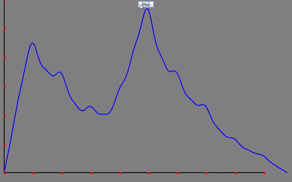
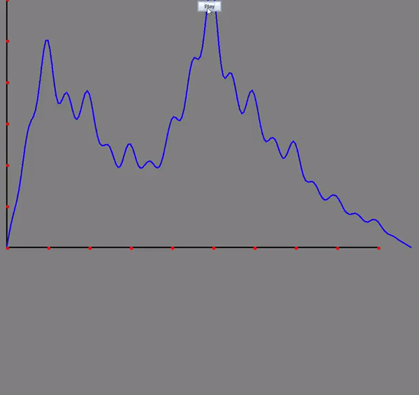
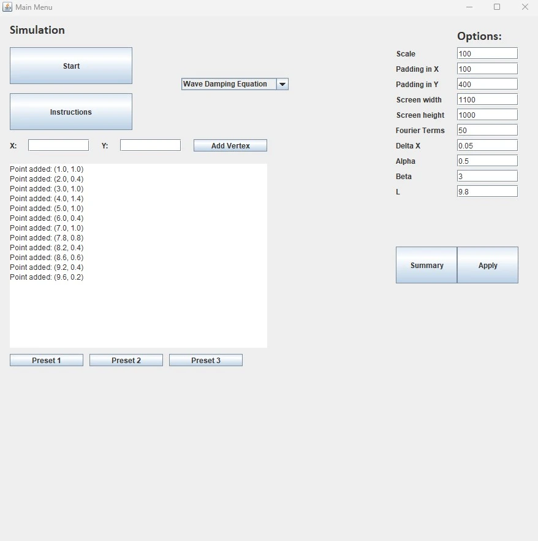

An Application for Simulating the Heat and Wave Equation
After taking a university course on differential equations, I found myself fascinated by the heat and wave equations we studied in the final chapters. Despite the comprehensive coverage of the subject, there was a lack of dynamic visualizations that could bring these equations to life. This inspired me to create the "Heat-Wave-Equation-Simulator" project to visualize the behavior of these equations over time.
The project I developed is a numerical solver and visualizer for three types of differential equations: the heat equation, the wave equation, and the wave equation with damping. By considering the case with one spatial variable, the program creates a Hermite spline interpolation from user-inputted vertices, models the numerical solution, and visualizes the results using Fourier series coefficients.
For more information and to explore the source code, please refer to the GitHub repository.
How It Works
The simulation leverages two primary methods: cubic Hermite interpolation and the Fourier series method. The cubic Hermite interpolation ensures that the initial conditions are accurately represented by creating smooth curves between user-defined points. This is crucial for the accurate initialization of the heat and wave equations.
The Fourier series method, on the other hand, is used to solve these differential equations. By expressing the solution as a sum of sine functions with coefficients determined by the initial polynomial from the spline interpolation, the program can simulate the evolution of the differential equations over time. This method is particularly effective for capturing the periodic nature of wave and heat distributions.
Assumptions
For the heat equation, we assume the spatial variable \(x\) goes from \(0\) to \(L\) where \(L>0\) is defined as the upper bound of the domain. Let \(u(x,t)\) be the temperature at position \(x\) at time \(t\). The boundary conditions are given by
\[u(0,t) = u(L,t) = 0\text{, for all } t\ge0.\]
Similarly, for the wave equation, we assume the spatial variable \(x\) goes from \(0\) to \(L\) where \(L\) is defined as in the heat equation. Letting \(v(x,t)\) be the spatial displacement from the origin at position \(x\) at time \(t\) we have the boundary conditions given by
\[v(0,t) = v(L,t) = 0\text{, for all } t\ge0\]
and
\[\frac{dv}{dt}v(x,0)=0, \text{ where } 0\leq x\leq L.\]
Creating the Simulation
The project consists of several main classes that implement interfaces for setting up and running the simulations. For instance, the WaveSimulation class initializes parameters such as the list of points, Fourier series terms, and the wave propagation velocity. In the following code snippet, we have the constructor of the WaveSimulation class initializing key parameters for the simulation. Furthermore, the setupSimulation() method prepares the simulation by constructing a cubic Hermite spline from user input points. The Fourier coefficients to represent this spline are then calculated, resulting in the initial wave distribution at time step zero, along with satisfied boundary conditions. The output of the method is a GraphWave object which contains the constructed Fourier series corresponding to the simulation.
public class WaveSimulation implements Simulation {
List m_points;
float m_deltaX;
int m_fourierN;
float m_beta;
float m_L;
public WaveSimulation(List points, float deltaX, int fourierN, float beta, float L) {
m_points = points;
m_fourierN = fourierN;
m_L = L;
m_deltaX = deltaX;
m_beta = beta;
}
@Override
public Graph setupSimulation() {
// Implementation details...
}
}
Further examining the GraphWave object, we find the updateVertices() method. Within this method, the domain from zero to m_L is discretized. Each discretized point is evaluated using the Fourier series at a time step set by the setGraph() method. By evaluating all discrete points over the domain, we obtain the new temperature distribution.
@Override
public void setGraph(double time) {
if (time < 0) throw new IllegalArgumentException("time is negative");
m_time = time;
updateVertices();
}
/**
* Updates vertices for the given time: m_time. Using m_deltaX for accuracy.
*/
private void updateVertices() {
List temp = new ArrayList<>();
double xPos = 0;
//creating vertices until the whole domain has been taken
while (xPos < m_L) {
Vertex v = new Vertex();
v.setX(xPos);
//finding y value
double y = 0;
for (int n = 0; n < m_coefficients.size(); n++)
y += m_coefficients.get((n)) * Math.sin((n+1) * Math.PI * xPos / m_L) * Math.cos((n+1) * Math.PI * m_beta * m_time / m_L);
v.setY(y);
temp.add(v);
xPos += m_deltaX;
}
//add the last vertex, due to heat equation assumption, this vertex lies at (m_L, 0)
Vertex w = new Vertex();
w.setX(m_L);
w.setY(0);
temp.add(w);
//overwrite and save
m_vertices = temp;
}
Visual Demonstrations
Heat Equation: Visualizing heat distribution over time.
Wave Equation: Observing wave propagation over time.

Wave Equation with Damping: Seeing how damping influences wave behavior.
A Comprehensive Program UI: This allows for customizing detailed examples to simulate.
Conclusion
This project has been an enriching experience, deepening my understanding of differential equations and numerical methods. It was particularly satisfying to finally be able to see theoretical concepts visualized in motion. Future improvements and ideas for this project might include incorporating more complex boundary conditions and optimizing the calculations for better performance.